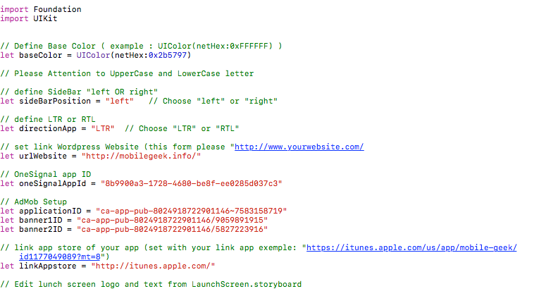

Thank you
With NewsApp, create your own app for iPhone and iPad from your URL Wordpress Blog/Magazine with just a few clicks! No coding needed. With custom pages like Category and Favorite.
Set it and turn your awesome app.
First, install the last version of Xcode (Xcode 8) from the "App Store" in your Mac.
how to install Xcode:
https://www.youtube.com/watch?v=Bgh9u7x8i4Y
maybe you need to install cocaopods if it is not installed
https://www.youtube.com/watch?v=oNKVVBN2JN0
Setting up your configuration:
Open “MyBusinessApp.xcworkspace” file
Set “display name” with your app name and “bundle identifier”.
Set also your “team”.
https://wordpress.org/plugins/json-api/
Setup “GlobalConstant.swift” file:
Open the “GlobalConstant.swift” file and follow the comments to setup the application properties

Watch the tutorial video :
https://www.youtube.com/watch?v=tv9QE3-ViwA&feature=youtu.be
1- Create an account:
2- In app setting -> platforms: configure your app
See: https://documentation.onesignal.com/docs/generate-an-ios-push-certificate
Next, you will find a “onesignal-free-web-push-notifications” Folder in the main folder of “NewsApp”.
Install it in your wordpress website. (plugin)
Watch this video: https://youtu.be/bZ4gHaUOW6I
Set One Signal Configuration on file “GlobalConstant.swift”:
// OneSignal app ID
let oneSignalAppId = "Your App ID"
Publish your app and Enjoy
That's it.